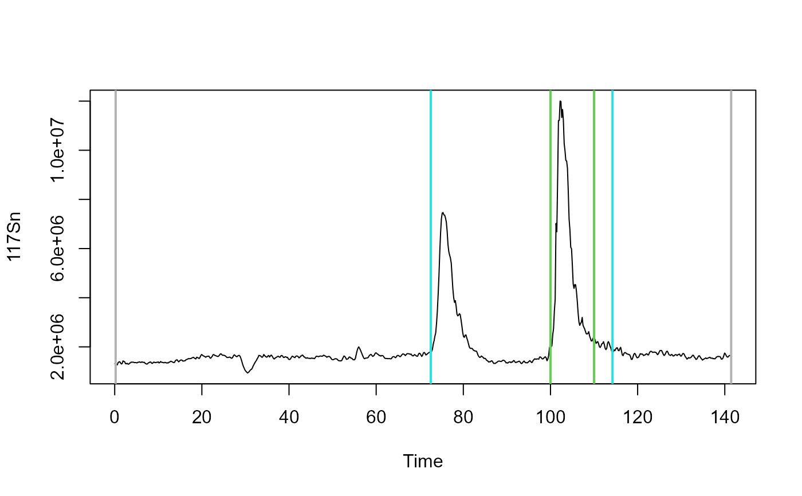

Generate a table with peak data.
Arguments
- pro_data
Data.frame with at least two numeric columns or a list of such data.frames.
- int_col
Column name of the intensity column to be used.
- time_col
Column name of the time column to be used.
- peak_start
Value which is taken as peak start point, when manual peak picking is chosen. Can be a vector of length(pro_data) when this is a list of files.
- peak_end
Peak end point(s), cf. peak_start.
- minpeakheight
A threshold value for peak picking via peak height.
- PPmethod
Peak picking method.
- BLmethod
Method for baseline correction.
- deg
Degree of polynomial for baseline correction.
- cf
A correction value for cutting the area around the detected peak.
- simplify
In case that pro_data is a list: shall result table be combined to a data.frame?
Details
This function provides a simple detection algorithm for peak boundaries based on the peak height and alternatively allows for manual setting of the peak boundaries or selecting a signal range. It has implemented a method for baseline correction based on polynomial fitting and will compute the peak area using the trapezoidal rule.
Examples
raw_data <- ETVapp::ETVapp_testdata[["oIDMS"]][["Samples"]]
pro_data <- process_data(raw_data, c1 = "117Sn", c2 = "80Se", fl = 9)
peak_data <- get_peakdata(pro_data, int_col = "117Sn")
plot(x = pro_data[[1]][,1:2], type = "l")
abline(v = peak_data[1,2:3], col=grey(0.7), lwd=2)
# limiting peak detection using the 'minpeakheight' parameter
peak_data <- get_peakdata(pro_data, int_col = "117Sn", minpeakheight = 2*10^6)
abline(v = peak_data[1,2:3], col=5, lwd=2)
# limiting peak detection setting start and end manually
peak_data <- get_peakdata(pro_data, int_col = "117Sn", PPmethod = "Peak (manual)",
peak_start = 100:102, peak_end = 110:112)
peak_data
#> Isotope Start [s] End [s] Area [cts] BLmethod
#> 1 117Sn 100 110 39889245 modpolyfit
#> 2 117Sn 101 111 33733729 modpolyfit
#> 3 117Sn 102 112 29611834 modpolyfit
abline(v = peak_data[1,2:3], col=3, lwd=2)
